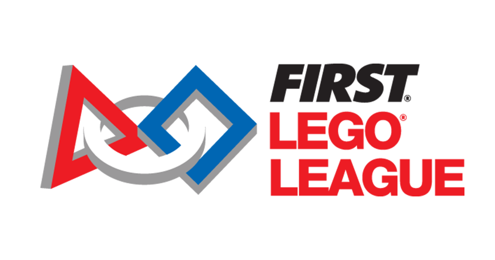

First Lego League Italy - 1st Place Interregional 🏆 1st Place

Project leader of the ITS Luigi Einaudi team: robot design and programming, student group coordination, and multi-mission competition management.
Project Description
First Lego League Italy 2019 – Robotics + innovation competition for high school students. The competition is divided into two components:
- Robot Game: programmed Lego Mindstorms EV3 robot must complete 15 or more missions in 2.5 minutes
- Scientific Project: research on a real-world problem related to the season's theme (ours: plastic recycling) with concrete solutions to present to the judges
My role: Project Leader + Lead Programmer of the ITS Luigi Einaudi team (Correggio, RE). I guided the design/strategy and wrote the EV3 Classroom code with my group of multiple students, winning 1st place interregional.
What I did
- Robot design: Study of the competition field, selection of Lego components,
3D modeling, and prototype testing (50+ hours of building)
- Programming: Code development with EV3 Classroom
(block-based language similar to MIT's Scratch) for 15 missions
(movements, color/distance sensors, automatic mechanical arms)
- Team management: Task assignment, conflict resolution,
weekly sprint planning to meet deadlines
- Competition: Real-time strategy, debugging under pressure, presentation
of the robotic project to the judges
Results and Skills
Result: 1st place interregional (Emilia-Romagna),
regional qualification, official FLL Italy recognition.
Skills developed:
• Technical leadership and team management under stress
• Robotics programming (Lego Mindstorms EV3)
• Practical problem solving (debugging in 2 minutes)
• Technical communication (presentation to judges)
• Project planning with strict deadlines
Directly transferable to internships/industrial projects